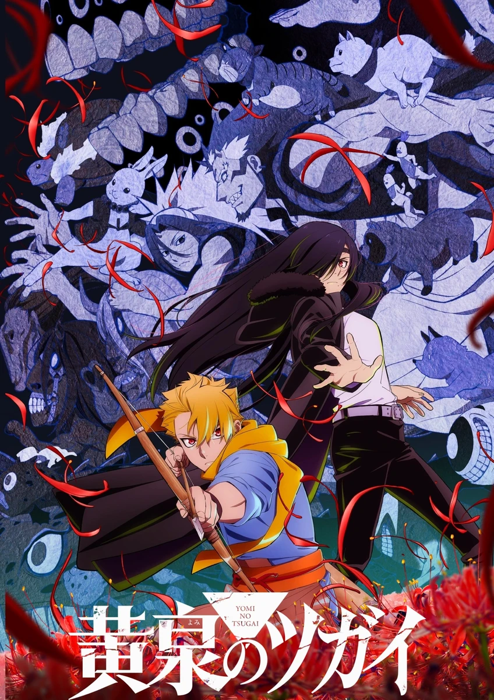

COMPLETE RECORD · Pages 轻量资料
黄泉使者
黄泉のツガイ
别名
- 黄泉的使者
- 黃泉雙使
- Yomi no Tsugai
- Daemons of the Shadow Realm
- 形式
- TV
- 首播
- 2026-04-04
- 集数
- 24 集
- 评分
- 6.9
- 评分人数
- 1555
SYNOPSIS
简介
尤尔是一名住在山中小村庄的猎人少年，靠着狩猎野鸟维生，与双胞胎妹妹阿萨及村民们过着朴实的生活。然而，这样平稳的日常却被空中响起的”龙的叫声”给撕裂了── 安逸的村庄里潜藏着传承与谜团，这个村里究竟藏着什么秘密呢？尤尔的命运又会如何？谜团与不可思议纵横交错的崭新使者战斗──紧张刺激的幻怪奇幻谭，现在揭开序幕。
[简介原文] 山奥の小さな村で暮らす、狩人の少年・ユル。彼は、野鳥を狩り、双子の妹・アサや村人たちと共に慎ましく日々を過ごしていた。しかし、そんな平穏な日常を切り裂く“竜の鳴き声”が空に響いて―― 穏やかな村に潜む伝承と謎、この村に隠された秘密とは？そして、ユルの運命は？謎と怪奇が交錯する新感覚ツガイバトル――息もつかせぬ幻怪ファンタジーが、今動き始める。
EPISODE LOG
正片章节
已收录 24 条正片章节
- 1阿萨与尤尔 首播：2026-04-04时长：24 分钟
- 2右与左 首播：2026-04-11时长：24 分钟
- 3戴拉与花 首播：2026-04-18时长：24 分钟
- 4仁与尤尔 首播：2026-04-25时长：24 分钟
- 5兔与龟 首播：2026-05-02时长：24 分钟
- 6影森家与神秘的袭击者 首播：2026-05-09时长：24 分钟
- 7阿萨与「解」 首播：2026-05-16时长：24 分钟
- 8怀疑与确信 首播：2026-05-23时长：24 分钟
- 9拥抱与低语 首播：2026-05-30时长：24 分钟
- 10手长与脚长 首播：2026-06-06时长：24 分钟
- 11哥哥与弟弟 首播：2026-06-13时长：24 分钟
- 12侍从与祈祷师 首播：2026-06-20时长：24 分钟
- 13大凶与小凶 首播：2026-07-04时长：24 分钟
- 14家人与朋友 首播：2026-07-11时长：24 分钟
- 15尤尔与男儿 首播：2026-07-18时长：24 分钟
- 16影森与新乡 首播：2026-07-25时长：24 分钟
- 17爱哭的孩子与坏孩子 首播：2026-08-01时长：24 分钟
- 18第18话 首播：2026-08-08时长：24 分钟
- 19第19话 首播：2026-08-15时长：24 分钟
- 20第20话 首播：2026-08-22时长：24 分钟
- 21第21话 首播：2026-08-29时长：24 分钟
- 22第22话 首播：2026-09-05时长：24 分钟
- 23第23话 首播：2026-09-12时长：24 分钟
- 24第24话 首播：2026-09-19时长：24 分钟